International Journal of Mechanical Engineering and Mechatronics (IJMEM)
ISSN: 1929-2724

Volume 1, Issue 2 Year 2012 - Pages 66-71
DOI: 10.11159/ijmem.2012.008
A Simple Algorithm to Relate Measured Surface Roughness to Equivalent Sand-grain Roughness
Thomas Adams¹, Christopher Grant¹, Heather Watson²
¹Rose-Hulman Institute of Technology, Department of Mechanical Engineering
5500 Wabash Ave., Terre Haute, Indiana, USA
adams1@rose-hulman.edu; grantcl@rose-hulman.edu
²James Madison University, School of Engineering
801 Carrier Drive, Harrisonburg, Virginia, USA
watsonhl@jmu.edu
Abstract - One of the most important resources available in the field of fluid mechanics, the Moody Chart gives Darcy friction factor as a function of Reynolds number and relative roughness. The experimentalists who generated the data correlated in the Moody Chart, however, roughened pipe surfaces by coating their internal surfaces with a monolayer of sand, the pipe wall roughness being defined as the average diameter of the sand grains. Thus, the sand-grain roughness values required for use with the Moody Chart are not derived from any direct measure of roughness using modern surface characterization equipment, such as an optical profilometer. Using direct measurements of surface roughness in fluid flow calculations may therefore result in significant error. In this paper we present a simple algorithm with which various measured surface roughness parameters can be converted to equivalent sand-grain roughness. For nearly every surface roughness value converted to equivalent sand-grain roughness using the algorithm, better agreement with fluid flow experiments is seen over using the raw roughness value.
Keywords: Surface Roughness, Sand-Grain Roughness, Moody Chart, Darcy Friction Factor.
© Copyright 2015 Authors This is an Open Access article published under the Creative Commons Attribution License terms. Unrestricted use, distribution, and reproduction in any medium are permitted, provided the original work is properly cited.
1. Introduction
Chart (Moody, 1944) represents one of the most widely used resources in fluid mechanics. Relating Darcy friction factor to Reynolds number and relative roughness, the Moody Chart correlates extensive experimental data obtained earlier by Nikuradse (1933), in which pipe surfaces were roughened by coating their internal surfaces with a layer of sand. Pipe wall roughness, ε, was thus defined as the average diameter of a sand grain. Actual pipe surfaces, however, do not have such a regular surface geometry as that created by a monolayer of sand grains. Rather, they are replete with hills and valleys of various sizes and shapes. Thus, direct measurements of surface roughness may not be appropriate for fluid flow calculations and could lead to significant error. And though profilometry techniques for measuring surface roughness represent a mature technology, the algorithms employed for calculating an average roughness do not coincide with the idea of sand-grain roughness.
Values of roughness reported in tables in fluid mechanics texts and handbooks typically reflect an "equivalent sand-grain" idea of roughness, having been back-calculated by comparing pressure drop data from fluid flow experiments to the Moody Chart. These equivalent sand-grain roughness values do not result from any direct measurement of surface roughness using standard surface characterization equipment and the various definitions of surface roughness thereof. When encountered with a pipe surface for which no such data exist, especially when utilizing new materials and/or fabrication techniques, one usually measures surface roughness directly using any number of available profilometers. A link between measured surface roughness and the sand-grain roughness required for friction factor purposes would therefore be highly useful.
A number of researchers have recognized the shortcomings of using measured surface roughness parameters in conjunction with the Moody Chart. The work of Kandlikar et al. (2005) was partly motivated by the very large relative roughnesses (up to 14%) encountered in microchannels. They re-plotted the Moody Chart using the idea of a constricted flow diameter. Bahrami et al. (2005) assumed pipe wall roughness to have a Gaussian distribution, and found frictional resistance using the standard deviation in the roughness profile. Pesacreta and Farshad (2003) showed that measured peak-to-valley roughness, Rzd, better represent sand-grain roughness than the more common arithmetic average roughness, Ra. Taylor et al. (2005) gives an excellent review of much of this work.
2. Proposed Roughness Conversion Algorithm
A simple solution to the problem or relating surface measurements to sand grain roughness is to calculate the roughness of a hypothetical surface assuming it to be made up of a uniform monolayer of same-diameter spheres while employing the same integration techniques as in standard profilometer software. The resulting algebraic expressions can then be inverted and solved for sphere diameter in terms of "measured" roughness. When applied to actual surface roughness measurements, these expressions give an approximate value for equivalent sand-grain roughness.
2. 1. Measured Surface Roughness Parameters
A number of different parameters have been defined to characterize the roughness of surface such as that illustrated in Fig. 1. By far the most common is the arithmetic average of absolute values,
|
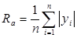 |
(1) |
where yi is the distance from the average height of a profile (the mean line) for measurement i, and n is the number of measurements. Two other parameters considered in the present work are the root mean squared and the peak-to-valley values:
|
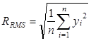 |
(2) |
|
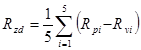 |
(3) |
In the peak-to-valley parameter Rpi and Rvi refer to the largest distances above and below the mean line for one of five measurements, all of equal scan length in the x-direction.
2. 2. Illustration of Conversion Algorithm
Figure 2 gives a schematic diagram of a single row of spheres of diameter ε on a flat surface as viewed from the side. For a scan in the x-direction across the tops of the spheres, the surface as seen by a profilometer would appear as a uniform row of half-circles (Fig. 3). In the limit as the number of measurements goes to infinity, (1) becomes the integral
|
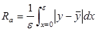 |
(4) |
For the profile in Fig. 3
|
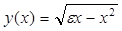 |
(5) |
and
|
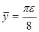 |
(6) |
Substituting (5) and (6) into (4) and performing the integration gives
|
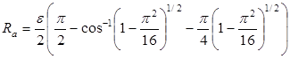 |
(7) |
Solving (7) for ε and simplifying gives
|
ε = 11.03Ra |
(8) |
Equation (8) shows that if a profilometer were used to measure Ra for a surface consisting of a layer of spheres of diameter ε, the resulting value of Ra could be as much as an order of magnitude smaller than sand-grain roughness appropriate for friction factor calculations.
3. Generalized Algorithm
It is highly unlikely that a profilometer measuring the roughness of a surface comprised of a monolayer of uniform spheres would scan atop the peak of each sphere. Therefore, a more sophisticated model in which integrals of the type given in (4) can be performed for different scan directions was developed using the software package MATLAB. Fig. 4 shows a model of hexagonally packed spheres created in MATLAB for this purpose.
Using the algorithm outlined in 2.2, the MATLAB model was used to relate Ra, RRMS, and Rzd as given in (1)-(3) to the diameter of the spheres, ε. For each parameter the MATLAB model averaged scans made in three directions: atop the peaks of each sphere, over the points of contact between the spheres (the lowest point), and midway between those two directions. The results are given in Table 1.
Table 1. Estimated sand-grain roughness based on measured surface roughness parameters.
|
Roughness parameter |
Estimated sand-grain roughness, ε |
|
Ra |
ε= 5.863Ra |
|
RRMS |
ε = 3.100RRMS |
|
zd |
ε = 0.978Rzd |
4. Experimental Validation
In order to validate the estimates of ε given in Table 1, a A Zygo NewView 6300 interferometer was used to measure Ra, RRMS, and Rzd for pipes of several different materials, including copper, aluminium, steel, and galvanized steel. The values were then converted to their respective sand-grain roughness estimates given in Table 1 and then compared to equivalent sand-grain roughness values obtained from turbulent fluid flow experiments performed on the same length of pipe.
4. 1. Fluid Flow Experiments
Experimental values for equivalent sand-grain roughness were obtained for the various pipes via fluid flow experiments. In effect, measured values of head loss and flow rate were used to calculate experimental values of friction factor and Reynolds number, which in turn were used in the equation developed by Haaland (1983) to estimate equivalent sand-grain roughness:.
|
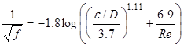 |
(9) |
The Haaland equation was used rather than other curve fits for the Moody Chart since the equation can be explicitly solved for ε.
Figure 5 gives a schematic diagram of the flow apparatus itself along with the physically measured parameters. The various pipe materials and dimensions are given in Table 2, and typical values of the other measurands are given in Table 3. Water at room temperature was used in all experiments.
Table 2. Pipe materials and dimensions.
|
Material |
Length, L (cm) |
Diameter, D (cm) |
|
Copper |
62.5 |
2.05 |
|
Copper |
62.5 |
1.44 |
|
Aluminium |
62.5 |
4.22 |
|
Steel |
62.5 |
1.55 |
|
Galvanized steel (smooth) |
62.5 |
2.10 |
|
Galvanized steel (rough) |
62.5 |
1.57 |
Table 3. Typical measure and values for fluid flow experiments.
|
Pipe material |
Copper |
|
Length, L |
0.625 m |
|
Pipe Diameter, D |
0.02 m |
|
Head loss, hL |
0.08 m |
|
Volume, |
0.0222 m3 |
|
Time, t |
30 sec |
In order to reduce the data to find equivalent sand-grain roughness, experimental values of friction factor and Reynolds number were determined first. Equations (10) and (11) give the familiar relations for head loss in terms of friction factor and Reynolds number, respectively:
|
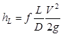 |
(10) |
|
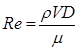 |
(11) |
where f is friction factor, ϱ, is density, and μ is viscosity. In terms of the measurands given in Tables 2 and 3, (10) and (11) can be rearranged to give the data reduction equations for f and Re as
|
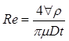 |
(12) |
|
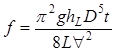 |
(13) |
These values were then used in the friction factor equation given in (9) and back-solved for ε to give the experimental value of sand-grain roughness:
|
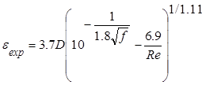 |
(14) |
4. 2. Results and Discussion
Figure 6 gives a comparison of the various roughness values for the 2.05-cm diameter copper pipe obtained from the optical profilometer, the estimated sand-grain roughness based on those values using the algorithm, and the value of equivalent sand-grain roughness found from the fluid flow experiments. Circles represent roughness values obtained from the profilometer, with filled-in circles giving the corresponding estimated sand-grain roughness using the algorithm. The shaded grey region on either side of the measured sand-grain roughness indicates its experimental uncertainty. The measured value of equivalent sand-grain roughness from the fluid flow experiments is considered the true value. Table 4 gives the corresponding numerical values. Standard uncertainty propagation techniques were used to estimate all experimental uncertainties.
Table 4. Comparison of various roughness values.
|
Roughness parameter |
Measured value (μm) |
Estimated sand-grain roughness (μm) |
|
Arithmetic average, Ra |
0.204 |
1.2 ± 0.1 |
|
Root mean square, RRMS |
0.269 |
0.8 ± 0.1 |
|
eak-to-valley, Rzd |
1.89 |
1.85 ± 0.09 |
|
Equivalent sand-grain roughness from fluid flow experiment, εexp |
1.78 ± 0.08 |
— |
Figure 6 and Table 4 show that of the measured roughness parameters, Ra does the worst job of estimating equivalent sand-grain roughness and Rzd does the best. Once the algorithm is applied to a surface measurement, RRMS does the worst job of estimating ε, whereas Rzd again performs the best. The superior estimate of ε resulting from the use of Rzd is consistent with previous research. By comparison, the expected value for equivalent sand-grain roughness for copper as given in Binder (1973) is 1.5 μm.
In all cases, however, it should be noted that the converted roughness values always come closer to the true value of sand-grain roughness than the raw measured values, with the converted value of Rzd falling within the range of experimental uncertainty of the true value.
Figures 7-11 show the same comparisons for the remaining pipe materials and dimensions. The figures appear in order of increasing sand-grain roughness as obtained via experiment.
Figures 7-11 all show the same trends as does Fig. 6 in terms of raw measured surface parameters; that is, Ra does the worst job of estimating sand-grain roughness whereas Rzd does the best. Furthermore, the estimated values of sand-grain roughness found by applying the algorithm to Ra and RRMS always come closer to ε than do the raw values, with the converted Ra consistently outperforming the converted RRMS.
Less consistent, however, are trends in Rzd. At lower values of sand-grain roughness Rzd under predicts ε, whereas at higher roughnesses Rzd over predicts ε. As the conversion factor for estimating ε based on Rzd is less than one, the converted Rzd value therefore does a better job of estimating ε at low roughnesses than does the raw measured value, but a worse job at high roughnesses. And at the two highest sand-grain roughnesses tested, the converted Ra value actually slightly outperforms both the measured and converted Rzd values.
Also seen in Figs. 6-11 is that the conversion algorithm generally does the best job of estimating ε at the lowest roughness values. That is, the rougher the surface, the less benefit there is in applying the algorithm. These trends can also be inferred from Fig. 12, in which a comparison of all measured and converted roughness parameters is given for all pipe materials and dimensions.
It is seen, then, that when the only available information regarding surface roughness consists of profilometer-obtained values of Ra and/or RRMS, the two most common surface roughness measurements, a correction should always be applied. This ensures a better estimate sand-grain roughness over the raw value, the converted Ra value being the preferred parameter. When Rzd information is also available, however, the algorithm may be of less benefit. This stems from both the correction factor for Rzd being close to unity as well as the uncertain trends of Rzd over large ranges of roughness.
5. Conclusion
A simple algorithm to convert various measured surface roughness parameters to sand-grain roughness has been developed. The algorithm assumes that the relationship between measured surface roughness parameters and sand-grain roughness can be approximated by applying roughness parameter definitions to a hypothetical surface consisting of a monolayer of spheres of uniform diameter. Based on fluid flow experiments, arithmetic average, root mean square, and peak-to-valley surface roughness parameters almost always better approximate equivalent sand-grain roughness after the algorithm has been applied.
Acknowledgements
The authors wish to thank Drs. Scott Kirkpatrick and Azad Siahmakoun of the Department of Physics and Optical Engineering at Rose-Hulman Institute of Technology for their support in this work.
References
Bahrami, M., Yovanovich, M. M., Cullham, J. R. (2005). Pressure drop of fully-developed laminar flow in rough microtubes, Third International Conference on Microchannels and Minichannels ICCMM 2005-75108. View Article
Binder, R. C. (1973). "Fluid Mechanics" Prentice-Hall.
Farshad, F. F., Rieke, H. H., (2005). Technology innovation for determining surface roughness in pipes, Journal of Petroleum Technology, 57 (10), 82-86. View Article
Haaland, S. E. (1983). Simple and explicit formulas for the friction factor in turbulent flow, Journal of Fluids Engineering No. 103 (5), 89-90. View Article
Kandlikar, S. G., Schmitt, D., Carrano, A. L., Taylor, J. B. (2005). Characterization of surface roughness effects on pressure drop in single-phase flow in minichannels, Physics of Fluids, 17 (10). View Article
Moody, L. F. (1944). Friction factors for pipe flow. Transactions ASME., 66, 671–683. View Article
Nikuradse, J. (1937). Laws of flow in rough pipes, NACA Technical Memorandum 1292. View Article
Pesacreta, C., Farshad, F. (2003). Coated Pipe Interior Surface Roughness as Measured by Three Scanning Probe Instruments, Anti-Corros. Methods and Materials 50, 6. View Article
Taylor, J. B., Carrano, A. L., Kandlikar, S. G., (2006). Characterization of the effect of surface roughness and texture on fluid flow: past, present, and future. International Journal of Thermal Sciences, 45, 962–968. View Article